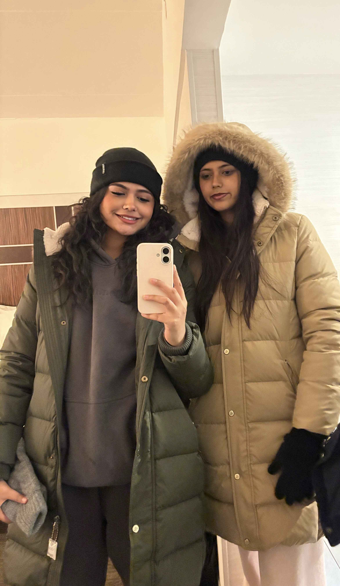

Fajar Jawad
"Fudgie"
Who am I?

My name is Fajar Jawad, I am 16 years old, and my birthday is February 20th, 2010. I was born at Scripps La Jolla, and although I have lived in San Diego my whole life, my roots are from Lahore, Pakistan. My name is derived from an Arabic word meaning "dawn," and I am Muslim. I'm currently in 10th grade at Canyon Crest Academy and have moved around San Diego over the years, from Encinitas to La Jolla, to Del Mar, and now Carmel Valley. I went to Ocean Air Elementary and then Pacific Trails Middle School. I love to travel and have visited over 15 countries across Asia, Africa, North America, and Europe, including Morocco, Turkey, and Spain. I also run a nonprofit organization called Threads of Tomorrow, a vocational institute that teaches women to sew in Pakistan. Outside of that, I have two older siblings: a brother who graduated from UC Berkeley with a degree in computer science, and a sister who is currently pursuing a degree in public health at UCSD. I have 6 cousins, but only one of them is a girl, and I'm actually visiting her over spring break. I've always been the tallest girl in my classes, I'm 5'8", even back in elementary school. Alhamdulillah, I have lots of best friends, some of whom I've known since elementary school, and I overall really enjoy school
My Interests

I have many interests that are spread across a lot of different things. Some of them include reading, baking, practicing taekwondo, hiking, traveling, and so much more. I love being outside, and my favorite time of day is sunset.Living in San Diego truly feels like a vacation every day — especially since I love the beach and being in that perfect weather where there's a bit of cold air and the sun is shining on your skin. I'm in the Humanities Conservatory and enjoy exploring literature and philosophy. I also really enjoy music and am looking forward to going to concerts in the near future. When it comes to the people in my life, I love spending time with friends and family, whether that's watching movies, going on car rides, or going on adventures. I also love to bake, especially for bake sales. Outside of that, I'm a human rights activist and enjoy raising money for nonprofits. I play taekwondo more as a hobby, but I really enjoy the technical aspects of it.
My Goals
In the future, I plan to become a philanthropist. If I cannot become wealthy myself, I plan to help people individually by going into law or becoming a CRNA. I have also explored becoming a doctor, but I don't truly enjoy chemistry or biology. What I do enjoy is engineering, building, and using software to create anything and everything. I'm not entirely sure what I want to do, but to be truly happy, I just need to feel fulfilled. I plan to grow my vocational institute called Threads of Tomorrow register it as a 501(c)(3), and secure funding from various corporations and the United Nations. I also hope to become financially secure and take care of my parents, giving them everything they wish for. Right now, I'm working on starting a business, and over the summer I would love to see it grow.